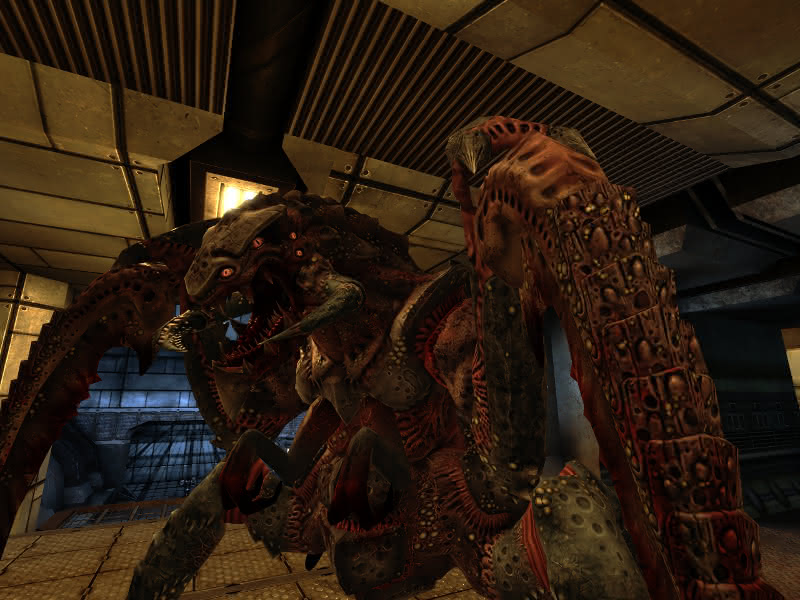

Use sound
Listen for aliens, footsteps, and base attacks.
Unvanquished
Unvanquished mixes first-person shooting with team strategy, bases, upgrades, and alien classes.
Download Unvanquished
Basics
Teamplay
Listen for aliens, footsteps, and base attacks.
Push with teammates so you can trade damage.
Strong bases win long matches.